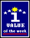

|
|
Link
Award
Selected as the Linksgiving.com "Weekly Link Award" winner for
this week (September 7 - 13, 2003)!
Linksgiving.com is a high quality directory of user-submitted
links to the most interesting and useful Web sites (in English,
German and Italian language). |
|
SciLinks
Selected by the SciLinks program, a service of National Science Teachers
Association. Copyright 2001.
SciLinks is an endeavor by NSTA to connect textbooks to useful online
content. |
| AMERICAN
ASSOCIATION FOR THE ADVANCEMENT OF SCIENCE |
Science
NetLinks
Recommended Online Resource for science educators. |
|
(the
Link Larder)
The Link Larder is a database for educational use which consists of subject
structured and quality assessed Internet information resources. The Link
Larder is a part of the Swedish Schoolnet and was comissioned by and has
continuing support from the National Agency for Education. |
 |
WannaLearn directory
| Our site has been selected as a educational resource by this
directory of "The best free, family-safe, online tutorials, guides
and instructionally oriented Websites on the Net!"
WannaLearn.com has recently been featured
in Entertainment Weekly, the Time-Warner publication,
as the portal site that "turns education into
revelation". |
|
|
National Biological Information Infrastructure (NBII)
| The NBII is an electronic gateway to biological data and information
maintained by federal, state, and local government agencies; private
sector organizations; and other partners around the nation and
the world. |
|
| cells.de |
cell.de Online-Service for Cell Biology/Germany
| Link of the month (March 2000) |
|
| |
Guide des meilleurs sites Web/France
| Notre site figure dans l'édition 2000 du Guide des meilleurs
sites Web paru le 15/10/99 chez MicrosofPress/France |
|
| |
Discovery Channel School
| Our site has been selected as a valuable educational Internet
resource
|
|
ENC |
Eisenhower National Clearinghouse
| Featured in September 1999 Digital Dozen |
|
NetWatch
Hotpick |
Science Magazine
|
Netscape
Open Directory |
Netscape
|
|
The Life Science Home Page
| Web Site of the Week at SciWeb - The Life Science
Home Page, a web site designed to collate and present information
and communication tools to the Life Science community |
|
 |
The International Academy of Digital
Arts and Sciences
| One of 5 nominees in the Science Category! |
|
| |
Cyber-Teddy Top 500 Web Site |
| |
Rated as "indespensible" by BioMedLink,
an evaluated and annotated database of Internet resources for the biomedical
community jointly created by BioMedNet and the University of Indiana. |
|  |
Austria Information
Switchboard's Information Value of the Week (July 8, 1998) http://www.ibiblio.org/ais/infoval.htm |
|
An Apple a Day: Cool
Apple (June 8, 1998) |
|
Nervelink-->the intellectual
scene>science |
|
New Scientist's Site of the Day
(May 1998) and Hotspot |
|
Learning in Motion Top10! Educational Sites (April 1998) |
|
Yahoo! Cool Site, April 1998 |
|
Project Cool Sighting, April 4,
1998 |
|
Blue Web'n Learning Applications Library |
| |
HMS Beagle WebPick 1997 |
|
Learn Linx's Site of the Month |
 |
Scout Report Selection |
|
Access Excellence's Biology Hotlist |
| |
Excellent rating at Medsite |